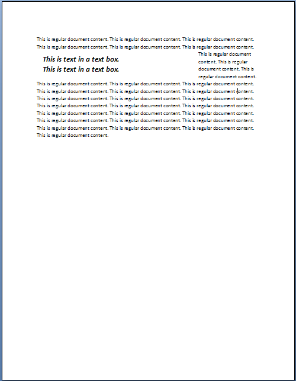
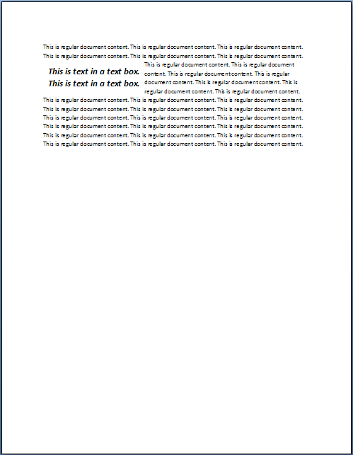

[Table of Contents] [docx version]
WordprocessingML Reference Material - Table of Contents
textboxTightWrap (Allow Surrounding Paragraphs to Tight Wrap to Text Box Contents)
This element specifies whether, for paragraphs in a text box, the surrounding text shall be allowed to overlap with the empty text box boundaries and tight wrap to the extents of the text within the text box.
This element shall only be read for paragraphs which are contained within a text box (have a txbxContent ancestor), ignored otherwise.
If the parent text box does not meet the following three criteria, then this property has no effect:
• The text box wrapping must be set to tight
• The text box border must not be set
• The text box shading must not be set
If this element is omitted on a given paragraph, its value is determined by the setting previously set at any level of the style hierarchy (i.e. that previous setting remains unchanged). If this setting is never specified in the style hierarchy, then paragraphs in a text box have no tight wrapping overrides, and text shall wrap to the extents of the text box.
[Example: Consider a document with a tight wrapped text box which extends two-thirds of the way across the page, as follows:

The surrounding text is tightly wrapped to the extents of the text box. If the consumer shall tight wrap to the extents of the text, that requirement would be specified using the following WordprocessingML:
<w:pPr>
<w:textboxTightWrap w:val="all" />
</w:pPr>
This would result in the following display of the content:

The resulting paragraphs within the textbox use the textboxTightWrap element to specify that text should be tightly wrapped to the paragraph's extents. end example]
|
Parent Elements |
|
pPr (§2.7.4.2); pPr (§2.9.24); pPr (§2.3.1.25); pPr (§2.7.5.1); pPr (§2.3.1.26); pPr (§2.7.7.2) |
|
Attributes |
Description |
|
val (Lines to Tight Wrap to Paragraph Extents) |
Specifies the lines in the parent paragraph which shall allow the text to be tight wrapped to the paragraph (and not the text box) extents when displaying the document.
[Example: Consider a paragraph in a text box which meets the criteria specified above which shall allow wrapping to the text extents on its first line only. That requirement would be specified using the following WordprocessingML:
<w:pPr> <w:textboxTightWrap w:val="firstLineOnly" /> </w:pPr>
The resulting paragraph would allow text to tightly wrap to the contents of its first line only. All other lines would wrap to the text box's extents. end example]
The possible values for this attribute are defined by the ST_TextboxTightWrap simple type (§2.18.99). |
The following XML Schema fragment defines the contents of this element:
<complexType name="CT_TextboxTightWrap">
<attribute name="val" type="ST_TextboxTightWrap" use="required"/>
</complexType>